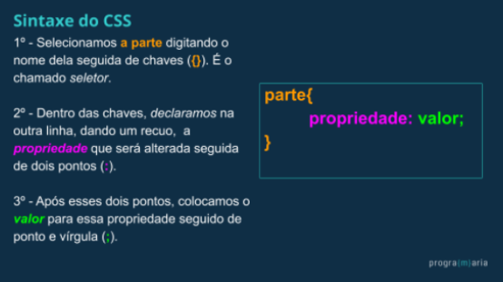
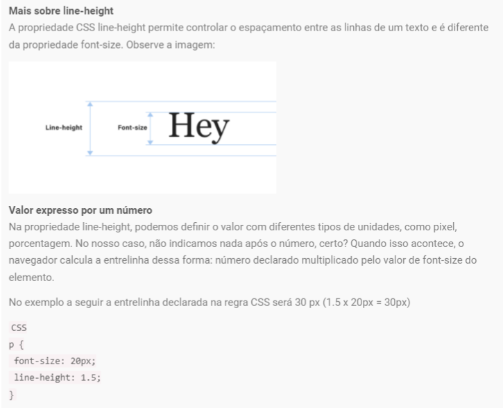
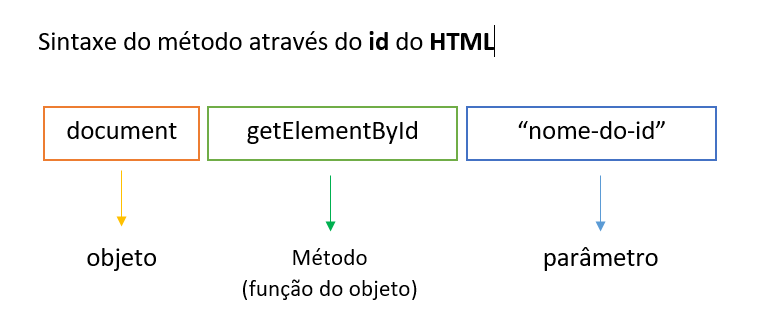

Resumo do curso de programação da Programaria
Introdução
Uma forma de deixar registrado e colocar em prática o que foi ensinado de programação básica das linguagens de HTML,CSS e JS do curso da Programaria de Dezembro de 2021.No fim do curso foi sugerido fazer um site com um tema de livre escolha e já que eles não davam nenhum material para servir de consulta no término do curso, resolvi unir o útil ao agradável.
Módulo 1 - introdução básica
Entendendo um pouco sobre o mundo da internet
A internet, diferente do que a gente imagina, não é uma nuvem mágica e sim, um grande cabo (normalmente submarino) de quilometros de extensão e alguns satélites. Nada mais é que uma rede distribuída de troca de informações entre diferentes dispositivos que estão conectados a ela, ou seja, um grande cabo que se conecta os servidores.
Já os servidores, são dispositivos com grande capacidade de armazenamento e que servem dados através do fio da internet para outros computadores.
E como é feito a comunicação entre os computadores?
É através do "endereço", o tal do IP. Todo dispositivo que é capaz de se conectar à internet tem um número de identificação,o IP (internet protocol). Uma outra maneira de identificação é o "domínio", que são nomeclauras, já que os números de IP são tão grandes e difíceis de memorizar.
Para entender um pouco melhor sobre como tudo isso funciona, temos um exemplo do envio de um e-mail. O computador que temos em casa, ele não serve dados e sim, recebe dados, o que chamamos de Cliente.Para conectar-se à internet, ou seja, ao cabo principal da internet, ele precisa de um provedor (a vivo, claro, tim...) daí cada e-mail está relacionado a um domínio de e-mail (gmail, yahoo...), que este está ligado um servidor que envia os dado...Exemplo: o cliente (eu, com e-mail gmail) através de um provedor "TIM" envio dados do servidor do Google gmail para enviar um email a uma amiga que vai para o servidor do email dela e de lá ela recebe o email.
O que é um Website?
Também conhecido como sites são pastinhas que podem ter diferentes tipos de linguagem e composto por vários arquivos de texto e mídia. Para serem publicados, é necessário salvar esses arquivos em um servidor, que ficará responsável por enviar dados para quem tenta acessá-los. Antes disso, é necessário um navegador para acessar os sites, quem fica responsável por solicitar as informações, recebê-las e montar o site para mostrar na nossa tela do nosso dispositivo,ou seja, eles servem como um grande dicionário que traduzem as diferentes tipos de linguagem.
É importante diferenciar a Internet da Web! Apesar de muitas vezes sejam usados como sinônimos, é importante saber que a Internet é a infraestrutura, a rede de computadores e dispositivos que trocam informações, e a Web é um serviço construído utilizando essa infraestrutura. Via Internet, você utiliza a web por meio dos navegadores, responsáveis pela requisição e apresentação das informações que nos são servidas/devolvidas pelos servidores. Por exemplo, Torrent, troca de mensagens simultâneas e aplicativos são outros serviços que utilizam a infraestrutura da internet e não necessariamente a web!
Como construir um site
Para passar as intruções para que o computador faça, devemos escrever em uma linguagem especifíca, esta linguagem são os códigos.
Geralmente, a estrutura de um site é feita por HTML, CSS e JS. Cada uma delas, possui uma função:
- HTML (HyperText Markup Language) - define a estrutura de elementos.
- CSS (Cascading Style Sheets)- define a aparência, o estilo dos elementos.
- JS (JavaScript) - define os comportamentos e interações. Script significa roteiro.
Hipertextos
É um texto através de ligações ou links que podemos acessar outras informações. Não só um outro texto mas também outras imagens, vídeos, áudios e acesso a outras informações. Basicamente é um texto que podemos clicar a ir para um novo site ou abre uma nova imagem por exemplo. Temos mais liberdade de navegar e com outros formatos de informações.
Para saber mais sobre links clique aqui.
Informações extras e curiosidades
Módulo 2 - HTML (parte 1)
Por onde começar?
Para começar a "codar", o curso indica uma plataforma gratuita chamada REPLIT. Nesta plataforma, após criar uma conta,basta fazer o login,escolher o tipo de linguagem e começar a escrever os códigos. No caso do curso, iniciamos com a linguagem HTML, que é o "esqueleto" do site.
Criando um novo projeto
- Após criar um "novo projeto" em "+ NEW REPLIT" e escolher o tipo de linguagem.
- O próximo passo é dar um nome ao arquivo. É indicado escrever tudo junto, em letras minúsculas e sem acentos, pois assim, já vai se acostumando com a forma de se "codar".
- A plataforma REPLIT está estruturada basicamente em três partes. O quadro esquerdo onde ficam os arquivos, a parte central que é o INDEX, onde escrevemos os códigos e o quadro da direita que é a parte de renderização, ou seja, é como visualizamos o site, a forma que o computador vai lendo o código escrito no index.
- Perceba que no INDEX, cada linha está enumerada. Isso facilita na hora de codificar, depois de escrever tantas linhas de códigos, esses números ajudam a identificá-los.
- Na parte superior, tem um botão verde RUN, é super importante usar ele para salvar. Toda vez que estiver codando, tenha o hábito de salvar o seu código frequentemente toda vez que fizer alguma alteração para que não perda todo o seu trabalho. Uma outra função desse botão é a renderização em que podemos visualizar o site.
- Uma outra maneira de visualizar o site, é clicar na flechinha que tem na aba superior do quadro de renderização. Ao clicar nesse ícone, se abre uma nova janela do navegador do site renderizado.
- Toda vez que fizer alguma modificação no código e quiser visualizar na aba do navegador, é importante atualizar a página ou apertar o F5.
Módulo 3 - HTML (parte 2)
Estrutura
- No HTML, a estrutura básica é composta pelo head (cabeçalho) e o body (corpo).
- O head ficam as informações para o sistema, e não é visível para quem está acessando o site. Diferente do body que fica visível.
Sintaxe do HTML
- No HTML, os textos funcionam com "etiquetas", as chamadas TAG. Elas servem para delimitar um início e um fim.
- Cada TAG é indicado entre os sinais de "<>" para indicar início e para indicar o fechamento "/" </>.
- Existem 6 tipos de cabeçalhos ("títulos") que são chamados de heading, ordenamos en níveis de relevância: h1,h2,h3,h4,h5 e h6. O h1 é o mais importante e o h6, o menor. Uma otra função é ajudar na organização hierárquica de conteúdo de busca na internet. Embora ao renderizar cada heding tenha um tamanho diferente, é só para diferenciar na importância, porque é no CSS o estilo e tamanho podem ser alterados.
- De acordo com as regras de SEO, é recomendado que uma página possua apenas uma tag h1 que indique seu assunto, pois essa tag informa aos motores de busca qual sua principal palavra-chave.
- Os parágrafos são indicados com a letra p através das tags <p></p>. Cada parágrafo se dá em forma de bloco e posicionadas uma em baixo da outra.
- A primeira coisa que se deve escrever no código é a definição do documento (tipo de documento). Para instruir para o navegador o código que estamos usando,a primeira linha do código será: <!doctype html> seguido na linha de baixo com <html>, conforme a imagem abaixo.

Formatação de textos (*extra)
As Tags de formatação de textos dão maior destaque nas palavras, seja para fins de SEO (Search Engine Optimization) que é o ranquemato de busca ou por conteúdo.
Veja alguns exemplos:
- b e strong para negrito/texto forte;
- i e em para itálico/ênfase;
- sup e sub para sobrescrito e subscrito, respectivamente;
- ins e
delpara indicar trechos que foram incluídos ou removidos, respectivamente; - small para textos menores que o padrão;
- mark para texto destacado.
Identação (Identation)
A identação ajuda a melhor visualizar a relação e a hierarquia entre os elementos. Se identa através de recuo, o espaçamentos em branco (ou no TAB do teclado).Além do mais, é uma boa prática que facilita o trabalho em equipe, facilitaria quando uma outra pessoa ver o seu código ou até mesmo para um teste em uma entrevista de emprego.#ficadica
Como colocar imagem
- A primeira coisa é fazer o upload do arquivo no REPLIT. Mas antes disso, deixe separado em seu computador as imagens que vão ser usadas e com nomeclatura fácil em alguma pastinha.
- No quadro esquerdo do REPLIT, deve-se criar uma pasta (folder) nomeando-a conforme a linguagem HTML, tudo junto, sem espaçamentos e minúsculas. Daí, é só fazer o upload da imagem ou da pasta. Ah! a sigla de imagem é img, normalmente usado para nomear a pasta com as imagens.
- Diferente dos conteúdos de texto que escrevemos diretamente las linhas de código e aparecem no site, os arquivos de mídia, precisam ser referenciados no através da seguinte estrutura: <img src="origem da imagem">. Ela é uma estrutura autocontida, e portato, ela não precisa de fechamento de barra.
- Na estrutura temos indicar o caminho de onde está a imagem salva no REPLIT. Fazemos isso por meio de um atributo de TAG chamado src = source que significa ORIGEM.
- Continuando a estrutura, temos a parte do valor que fica entre parênteses, é o "caminho da imagem", primeiro deve colocar o nome da pasta (no caso, img) seguido de barra "/" e depois o nome da imagem com a extensão (PNG/JPEG).
- DICA: Não é necessário uma ordem de atributos, desde que a sintaxe esteja correta.
- Para uma boa prática, podemos colocar um atributo alternativo, o "alt" que serve como descrição de imagem para o mecanismo de busca e acessibilidade. Quando dá um erro ao abrir a imagem no site, aparece a escrita do texto alternativo.
- Dessa forma:<img src="nome da pasta/nome da imagem" alt="descrição da imagem">
- além do atributo alt que é um texto alternativo caso não apareça imagem, tem o tooltip representado pelo title que aparece um texto ao passar o cursor em cima da imagem.
Como colocar listas
Existem dois tipos de listas: A unordered list <ul></ul> e a ordered list <ol> </ol>. A primeira é a lista desordenada e a outra é que tem uma ordem a ser seguida.
Depois de definido o tipo de lista, temos o iten list. Cada item da lista deve estar entre <li> e </li>.
Veja um exemplo com lista de compras:
.No caso das listas ordenadas podemos colocar o atributo type que permite especificar o tipo de marcador a ser usado. Veja os tipos:
- 1 - número padrão
- i - números romanos minúsculos
- I - números romanos maiúsculos
- a - letras minúsculas
- A - letras maiúsculas
Links
Se alguma palavra você quer fazer un link para direcionar em algum lugar, utilizamos o anchor (âncora), <a> </a> seguido do atributo de referência href. No caso, vamos colocar o atributo href (“hipertext reference”) seguido de sinal de igual = e entre aspas. Além disso, podemos adicionar um outro atributo, o target que serve para abrir o link em uma outra aba usando o _blank.
Exemplo: <a href="endereço do site" target=_blank> PALAVRA </a>
Com o atributo title é possível adicionar textos ao passar o cursor em cima do hipertexto. No caso desse site, foi uilizado no menu superior.
OBS.: Para tirar o underline dos links, teria que estilizar no CSS "text-decoration:none"
Veja como estilizar os links em pseudo-class clicando aqui
Seção head
Nessa seção colocamos informações para o sistema, ou seja, colocamos metadados <meta> (características/informações de dados) e que são lidas pelo computador e não ficam visíveis no site.
Nessa área do head,é a seção onde codamos para linkar com o css, links para favicons personalizados (ícones/imagem que dá para por na aba do navegador) e entre outros.
O metadado título, representa o título do documento HTML e não o conteúdo. Exemplo: <tittle>nome do título </tittle>. Esse é o título que aparece na aba do navegador. Ele também ajuda no raqueamento de busca como também na acessibilidade.
Um outro meta interessante é o utf-8. É um conjunto de caracteres universal que inclui praticamente todas as caracteres e, portanto, a página web poderá ser exibida em qualquer idioma. É uma boa prática que não devemos deixar de usar.
Muitos elementos <meta> incluem atributos name que especifica o tipo de lemento meta e o content que especifica o conteúdo real do meta. Dois desses meta-elementos são úteis para incluir na página: o autor da página e uma descrição concisa do site.
Especificar um autor é útil para descobrir quem escreveu a página e poder contacta-la. Alguns sistemas de gerenciamento de conteúdo possuem ferramentas para extrair essas informações automaticamente. Já especificar uma descrição que inclua "keywords" relacionadas ao conteúdo da página é útil para o ranqueamento do site pelo mecanismo de busca Search Engine Optimization ou SEO.
Exemplo que foi colocado nesse site:
<head>
<title>Resumão da Programaria</title>
<link href="css/style.css" rel="stylesheet">
<meta charset="utf-8">
<meta name="author" content="Renata Y. Namie">
<meta name="description" content="Resumo do material dado pelo curso básico de programação da Programaria em linguagens de HTML, CSS e Javascript">
</head>
Extra: Site favicon-converter
Módulo 4 - CSS
CSS no Replit
Da mesma forma que foi criada a pasta do HTML, deve-se criar um novo folder e adicionar um arquivo novo nomeando-a de style.css. Pois, como já mencionado antes, é pelo css que vamos estilizar "Style" a estrutura já montada em HTML.
Sintaxe do CSS
A regra em geral é escrever o seletor seguido de uma propriedade e o valor separados por dois pontos e colocados entre chaves{}.
Primeiro selecionamos a parte que queremos estilizar; depois adicionamos qual é a propriedade que queremos modificar (tamanho, estilo, cor...) e por último, o valor que queremos aplicar
.Veja o exemplo abaixo:
Alinhamento de texto
Todo o texto do nosso site está dentro do <body> e se queremos estilizar o alinhamento, devemos usar a propriedade text-align. O valor é de como vai querer alinhar. No curso, foi tudo centralizado (center) mas poderia ser: left (esquerda), right (direita) ou justify (justificado).
Exemplo:
Linkar o HTML com o CSS
Como já mencionado anteriormente na explicação sobre o head, é nessa seção que vamos ligar o HTML com o CSS. A propriedade é o link que através do atributo href indica a pasta onde está o arquivo do CSS e o atributo rel que relaciona folha de estilo stylesheet.
Veja o exemplo (*não identizado / sem espaçamentos):
<head>
<title>Resumão da Programaria</title>
<link href="css/style.css" rel="stylesheet">
</head>
Extra: Outras propriedades
Ajustar o tipo de fonte
Antes de ajustar as fontes, deve-se saber que existem categorias genéricas das fontes. Podemos usá-las quando um usuário não ter a fonte especificada no computador e como opção, automaticamente aparece uma letra genérica. Assim, é uma maneira de seguir com o desgin da letra escolhida.
Categorias genéricas de fonte:

Vejam os tipos de propriedades que podemos utilizar apra estilizar as fontes dos nossos textos escritos em HTML
- font-family - Usada como a fonte principal do site e que dá a possibilidade de incluir uma lista de fontes caso o usuário não tenha instalado essa fonte no dispositivo. Exemplo: font-family: open sans, sans-serif;
- font-style - Define a escolha do estilo da fonte em: normal, italic ou oblique.
- font-variant - Se usa para escolher a variante normal ou small-caps. Uma fonte small-caps é aquela que usa letras maiúsculas de tamanho reduzidos e o normal é a do tamanho padrão da fonte.
- font-weight - Se pode definir como normal ou bold (negrito = peso da fonte) e se pode definir em números o peso da fonte.
- font-size - Existem diversas maneiras de definir o tamanho da fonte, as mais usadas é em pixels e a outra é em porcentagens.
- font - Usada para abreviar e escrever em uma linha. Veja o exemplo:
Imagem retirada de DEVMEDIA
Mudar as cores
Podemos mudar as cores com a propriedade backgorund-color para o plano de fundo e color para a cor da fonte.
A indicação de cores podem ser feitas de várias maneiras: nominal (white, red,blue...); em RGB (255,0,0); em hexadecimal (#FF0000) e em hsl (0, 100%, 50%).
No caso desse site, foi colocado uma cor no blackgroud do body e dentro do body, fiz uma section da parte do texto e coloquei uma outra cor mais clarinha.
Alterar cor de um elemento específico
Se no caso, é alterar a cor de um elemento pontual, tal como, todos os subtítulos h2, basta ir no CSS e escrever h2 e o "color" desejado dentro das chaves {}.
Caso queira mudar as fontes em cores diferentes entre elas, devemos usar classe ou identidade. São formas de identificar certos elementos para aplicar alguma modificação específica. As funcões são similares, a única diferença é que vários elementos podem ter a mesma classificação class e o id é único, podendo ser usado apenas uma vez por página.
Por exemplo, se todos os subtítulos h2 estão em verde e eu quero um h2 específico em uma outra cor, teria que por um class ou id para ele. Ou seja, se no caso mais de um subtítulo h2 quero que sejam azuis, então é o caso de colocar o "class" já que é permitido para vários elementos. Se fosse apenas un h2, já seria um "id".
Para saber mais sobre "class" veja o próximo tópico.
Se deseja saber como aplicar o "id", clique aqui
Extra: Color picker
Classes
No CSS, a sintaxe de classe é feita pelo ponto final "." seguido pelo nome escolhido para essa classe. O ideal é colocar um nome bem ilustrativo. Depois, é necessário codar no HTML, indicando a classe class="nome da classe escolhida".
Veja um exemplo de uma classe para um subtítulo h2:
Existe o Anchor pseudo-class que define o estado de um elemento. Por exemplo, ele pode mudar de estilo quando o mouse passa por cima, estilizar de um link que já foi visitado ou não ou para ter um foco.
- Pseudoclasse - visited - Se um link já foi visitado ele muda de cor, no caso rosa.
- Pseudoclasse - mouse over link - Se passar o cursor em cima da palavra, ele muda de cor, no caso rosa.
Etiquetas semânticas do HTML
No curso aprendemos sobre a tag <section> estará no tópico mais adiante mas, existem outras etiquetas com funções similares que são importantes a serem estudadas.
Só para relembrar, uma tag semântica é um elemento que não é visual, ela serve mais para organizar a estrutura do HTML.
Segue alguns exemplos:
- <header/> - é a parte que representa o cabeçalho. Diferentemente da tag <head> que é mais para o sistema, o header pode ser usada várias vezes, pode inserir elementos do <h1> a <h6>, imagens, parágrafos ou listas de navegação.
- <section/> - representa uma seção dentro de um documento e geralmente contém um título. Usamos normalmente para descrever os tópicos de um documento. O <div> pode ser usado para formar um "bloco", um conjunto de <section/>
- <article/> - Utilizamos esse elemento quando precisamos declarar um conteúdo que não precisa de outro para fazer sentido, como é o caso de um blog que possui diversos assuntos. É recomendado identificar cada <article/> com um título.
- <nav/> - Usamos quando temos uma lista de links. Serve para indicar uma seção navegável.
- <aside/> - Seção complementar: utilizado paracriar uma área de apoio/adicional ao conteúdo principal.Como por exemplo de uma sugestão de leitura complemenatr para o leior.
- <main> - Específica o conteúdo principal e consequentemente , de maior relevância dentro da página. Portanto, para ser bem construída, uma página deve ter apenas um conteúdo principal.
- <footer/> - representa um rodapé com informações adicionais tais como, informações de autoria, como nome e contato do autor, e a data da publicações do conteúdo.
Extra:
Section e Div Tabless | Tags semânticos Medium | Tags semânticos DEVMEDIA
Ajustando largura
Dependendo do dispositivo que abrir a tela, você pode definir o tamanho (a largura) do conteúdo. Usando o max-widht, você pode limitar a dimensão máxima, ou seja, a tela pode ficar maior, mas nunca menor. Porém, normalmente essas medidas já vem pensado pelos designers.
As unidades de medidas são bastante diversas mas são divididas basicamente em Unidades absolutas e unidades relativas.
Unidade absoluta- São medidas que não têm referência com nenhuma outra medida e bastante comum no dia-adia. "Essas medidas são fixas e não mudam de acordo com as especificações do dispositivo. Esse tipo de medida é indicada para quando conhecemos perfeitamente as características físicas e as configurações das mídias onde serão exibidos nossos projetos." Como exemplo, o Pixel.
Unidade relativa- Essas medidas não é habitual e ela é calculada com uma outra unidade de medida definida. A vantagem dela é que permitem ajustes em diferentes dispositivos, o que garante um layout mais consistente e fluído em diversas mídias. Como exemplo, o em e o rem.
Extra: Guia de medidas Alura
Margins e Paddings
Como já é de imaginar, é a margem dos 4 lados do elemento: margin-top, margin-right, margins-bottom e marging-left. Para escrevê-las deve respeitar o sentido horário, conforme citado acima.
A propriedade marging pode ser aplicada de várias maneiras, usando um, dois, três ou 4 valores. Cada valor deve ser uma lenght, uma porcentagem ou a palavra auto (automático).
- Quando um valor é especificado, a mesma margem é aplicada para todos os quatro lados.
- Quando dois valores são especificados, o primeiro valor é aplicado ao lado superior (margin-top) e ao lado inferior (marging-left) e o outro valor, para as laterais.
- Quando três valores são especificados, o primeiro valor se refere ao topo, o segundo às laterais e o último, ao lado inferior (bottom).
- Quando quatro valores são especificados, as margens são aplicadas aos lados superior (margin-top), direito (marging-right), inferior (marging-bottom) e esquerdo (marging-left), nesta ordem (sentido horário).
** entender a diferença entre marging e padding, é que a primeira é o espaçamento entre elementos e o padding é o preenchimento interno.
Ajuste de listas
Recapitulando, existem dois tipos de listas: a ordenada e a desordenada. No caso, usamos a lista ul, unordered list e que vem com bolinhas. Para tirar as bolinhas (disc) é dizer o estilo da lista no css- list-style type = none.
Tag <section> + atributo id
Já citado anteriormente sobre as divisões / sessões em Tags semânticas, é possível que cada tópico ou cada sessão tenha um identificador único e exclusivo. Ele dá a possibilidade de navegação por âncoras ou estilizar no CSS.
Em outras palavras, quando não queremos fazer alguma alteração generizada (por exemplo da matriarca body) e sim, estilizar um ponto específico de um elemento, usamos a "classe" ou o "id". Um grande exemplo é o Menu superior desse site, ao clicar em um determinado módulo, ele leva ao tópico correspondente.
Neste caso, foi feito um id para cada sessão dos módulos.Veja exemplo da sessão do módulo 5 de JavaScript.
Boa prática: nomeclaturas
Uma boa prática é não usar caracteres latinos (como acentos e cedilha). Isso evita problemas, e se recomenda o uso de letras do alfabeto inglês, usar números desde que o nome não seja iniciado por um número e também não usar espaços. Para separar as palavras, usa-se geralmente o hífen (-) ou underline(_), ou então, alterna-se letras maiúsculas e minúsculas para diferenciar as palavras. Por exemplo: nomeClasse / NomeClasse.
Dependendo da versão do HTML, o sistema consegue diferenciar o maiúsculo com minúsculo, ou seja, podem estar escrito a mesma coisa, mas se alguma letra tiver diferente por um maiúsculo ou minúsculo, já é uma palavra diferente.
Diferença entre os atributos "id" e "class"
É comum confundir esses dois atributos, pois possuem funções bastante semelhantes para a estilização no CSS. A escolha entre usar um ou outro depende da necessidade do layout. De forma geral, lembre-se de que:
id = identificador,pode ser usado somente em um elemento do HTML, aparecendo uma única vez na página. Usamos # para selecioná-lo no CSS ou na navegação âncora do CSS ou HTML.
class = classe, pode ser usada em vários elementos HTML. Usamos o (.) ponto final para selecioná-lo no CSS.
Hierarquia de seletores
Antes de entrar direto nesse assunto, seria importante ressaltar algumas informações para melhor compreensão do tema.
Sabe-se que no HTML podemos alterar os estilos através do "style" mas, não é a forma ideal para aplicação de estilos. Imagina que ao criar um site, você decide que todos os títulos são de cor Verde e depois de um tempo gostaria de mudar para uma outra cor, como o azul. Porém, o número de páginas do seu site cresceu e seria inviável de alterar uma por uma pelo style no HTML.
Portanto, o uso do CSS permite a separação de estiloe conteúdo em arquivos diferentes. Isso permite que uma série de páginas seja alterada com apenas uma simples alteração no arquivo de estilos.
Folhas de estilo em cascata
Isso define a ordem de prioridades para os estilos aplicados.
Por exemplo, tenho uma navegação "nav" com classe chamado "flor" e que ali existem uma lista de links. No CSS, eu poderia escrever de várias maneiras, respeitando as prioridades.
.flor a{
}
ou
.flor ul li a {
}
Essa última é uma forma mais específica e talvez a maneira mais fácil para entender que o sistema respeita a ordem de prioridades para determinar um estilo mesmo que tenha já um estilo geral de um elemento matriarcal.
Display = exibição
Aqui é a forma de exibição da estrutura da pagina web. Geralmente, os elementos estão em "caixinhas" em block ("display-block" - um em cima da outra) ou inline ("display-inline" - um do lado do outro).
Uma outra coisa que ajuda na disposição dos elementos de texto é entender a diferença do font-size e line-height. Veja a imagem a seguir:
Mais informações sobre unidades de medidas:
Formulário: <form> + <input>
Para criar um formulário usamos a tag <form> </form>. Para criar os campos, usamos o <input>, este não precisa de fechamento de tag. O type para especificar o tipo de texto a ser inserido e o label seria o rótulo/etiqueta dos campos.
Criar vínculo das tags <label> e <input>
Apesar de estarem todas ali na mesma linha, próximas uma das outras, nada associa o label ao input.Por este motivo, é uma boa prática indicar no elemento <label> a qual campo <input> esse rótulo corresponde. Fazemos isso por meio do atributo for, que deve receber o valor do identificador do campo correspondente através do id.
Além de clicar na <label> e o cursor ir direto ao campo correspondente, isso deixa o código mais legível e melhora a usuabilidade do formulário, como por exemplo para os leitores de tela.
E por último, podemos adicionar o botão de enviar: <button> Enviar </button>
Módulo 5 - Java Script
Introdução
HTML e CSS não são formalmente consideradas linguagens de programação, e sim de marcação e de estilo respectivamente. Agora, na JavaScript é uma linguagem de programação.
Programar é dar ordens para que os computadores entendam e façam o que pedimos. Uma das habilidades mais importantes para programar é a capacidade de dividir o problema ou a tarefa que queremos que execute em várias partes peqeunas.
Para que o computador entenda bem os nossos comandos, é importante explicar muito bem, cada passo que desejamos realizar. O nome que damos a esse passo a passo para resolver um problema é chamado de algarítmo. Ele é a base para desenvolver os códigos.
Curiosidade: Java não é a mesma coisa que JavaScript. Uma é um tipo de linguagem de programação e a outra com o propósito de possibiltar as páginas web interativas e dinâmicas.
Extra: ALGARÍTMO
Criando pasta e arquivo para JS
Como já se sabe, o HTML é a estrutura de elementos, o CSS define a aparência/estilo e o JavaScript define os comportamentos e interações.
Para iniciar com o JavaScript, criamos uma pastinha nomeada de js seguindo os mesmos passos de como já fizemos antes para o HTML e CSS. A pasta deverá ter um arquivo: script.js
Regra de interação
Existem vários tipos de formulários mas, neste caso, vamos usar as regras que foram dadas no curso.
- Envia o formulário somente se os campos com nome e email estiverem preenchidos.
- Se un dos campos não tiverem preenchidos, não envia o formulário.
Condicional
A condição se colocamos como if e o senão como else.
Quando queremos colocar mais de uma condição e executá-las, usamos o "e" o operador &&.
Sintaxe do método
Para que o JavaScrip avalie se um determinado campo do formulário está preenchido, é necessário indicar que elemento que deverá ser validado.
Para selecionar um elemento no HTML via JS, usamos a funcionalidade de document.getElementByld. Além de seleção por id, podemos selecionar por classe.
No JavaScript, chamamos formalmente de "método" uma função específica de um objeto, no caso, document. (esse assunto não foi aprofundado no curso).
Porém, o método document.getElementByld por ser bastante comum, já vem pronto da linguagem JavaScript. Entretanto, é possível criar do zero seus próprios métodos, em outras palavras, suas próprias funções para determinados objetos.
A sintaxe é o "jeitão" de chamar métodos segue a estrutura da imagem acima. Nem todo método precisa de parâmento que são informações complementares. Nesse caso, ele é essencial, pois, só assim o JavaScript sabe que é para relacionar algum elemento do documento HTML pelo id.
Extras:
Criando variáveis
Variáveis são espaços que criamos na memória do computador para guardar dados.Imagine a memória do computador como um grande arquivo cheio de gavetas. As variáveis são como as gavetas desse arquivo! Nelas, podemos guardar informações de qualquer tipo.
Colocar um nome na gaveta indicando o que tem lá dentro é uma das formas de saber o que cada gaveta guarda! Assim, poderíamos ir direto na gaveta que interessa, abrir, e pegar o que está lá dentro. E é exatamente isso que fazemos no JavaScript! As variáveis precisam ser nomeadas para que o navegador saiba onde pegar as informações que guardamos nelas. Depois de identificadas, uma vez que usamos o nome da variável que queremos acessar no nosso código, o navegador encontra a “gaveta”, abre, e utiliza a informação que está lá.
A Sintaxe para criar uma variável e dar um valor para ela é esta: digitamos o comando var, seguido do nome da variável, o operador de atribuição igual (=) e o valor que queremos guardar nessa variável que acabamos de criar, finalizando com ponto e vírgula ; (como em todas as instruções de código escritos em JavaScript!)
O Conteúdo de campo é um valor, e quando é um texto são chamadas de string indicadas sempre entre aspas.
Notas:
Diferentemente das regras para nomes de identificadores ou classes, as strings podem conter espaço, caracteres especiais etc, pois se tratam de textos. Escrever "12" vai ser entendido pelo JavaScript como uma string (texto) e não um número, já que está entre aspas.
Um aspecto interessante da variável é que podemos guardar na nossa gaveta, por exemplo, uma sequência de passos para calcular o seu valor, que pode mudar dependendo dos dados que essa sequência receber. Isso nos permite realizar muitas coisas! Por exemplo, digamos que você queira exibir uma mensagem personalizada de boas-vindas para a visitante do seu site. Você cria uma caixa de diálogo do tipo prompt com a mensagem: Qual é o seu nome?, para que a visitante digite o nome dela, informação que você exibirá na mensagem. Para esse caso, nosso código ficaria assim:
Entendendo o código
- Criando a variável e atribuindo um valor para ela, na primeira linha: usamos o comando var para indicar que estamos declarando uma variável de nome nome (!) e atribuindo a ela o valor que for inserido no campo de texto da caixa de diálogo que exibirá esta mensagem ao visitante do nosso site “Qual é o seu nome?”.
- Utilizando a variável na segunda linha: exibir uma caixa de diálogo com uma mensagem composta pelo valor da variável nome seguido da string “, seja bem vinde!”.
O jeitão para resgatar o valor de uma variável é este: apenas utilizar o nome dela. Por isso, os nomes de variáveis precisam ser únicos, fáceis de entender, e também não podem ter o mesmo nome de comandos já existentes no JavaScript!
Além disso, assim como as funções, as variáveis são úteis porque podemos repeti-las ao longo do nosso código! É como se a gente tivesse guardado o resultado de um cálculo para usar quando necessário, em vez de calcular novamente toda vez que precisarmos utilizar o resultado dele, tipo quando você reserva um ingrediente pré-preparado para usar mais pra frente em sua receita.
Também vale mencionar que nós podemos “abrir a gaveta e trocar o conteúdo dela”, podemos atualizar o valor da variável em nosso código, caso seja necessário!
Outro ponto importante é que muitas vezes usamos variáveis para tornar o código mais legível, facilitando que outra pessoa entenda o que está acontecendo nele, e o seu propósito!
Tipos de dados básicos no JavaScript:
- Números (ponto flutuante): são os números reais, ou seja, inteiros ou frações, positivos e negativos. Ex.: 1, 3, 5, 1.32, 4.57, 1.5, -10, -3.45...
- String: texto puro, uma sequência de caracteres que podem ser letras, números, espaços e caracteres especiais. Ex.: “PrograMaria”, “astronauta”, “gratidão”, “Oi, tudo bem? Você vem sempre por aqui no Curso Online Eu ProgrAmo?”.
- Booleanos: valores do tipo true (verdadeiro) ou false (falso), usados nas operações lógicas.
- value = conteúdo
- != diferente
- == igual
Queremos também que este campo receba somente números e não letras, e será preciso usar um outro valor para o atributo type.
Você poderá encontrar o valor correto, nesse artigo que lista todos os tipos de entradas disponíveis para caixas de texto: https://www.w3schools.com/html/html_form_input_types.asp
Desafio - valida formulário: crie as variáveis nome, email e telefone, e guarde seus respectivos valores. Em seguida, substitua no código da função validaFormulario